A free OpenGL game for Linux and Windows
based on the Super Nintendo classic
by Daniel Nelson
version 1.1.8
Tetris Attack
|
|
A free OpenGL game for Linux and Windows based on the Super Nintendo classic
by Daniel Nelson
version 1.1.8
|
| 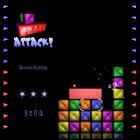 | 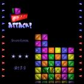 | 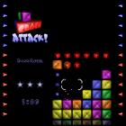 |
| 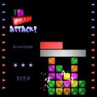 | 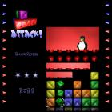 | 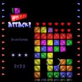 |
| 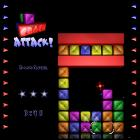 | 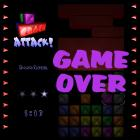 | 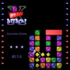 |
| 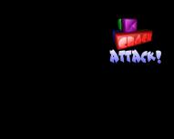 1280x1024 standard wallpaper 1152x864 standard wallpaper | 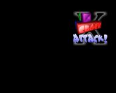 1280x1024 X-treme wallpaper 1152x864 X-treme wallpaper |
| 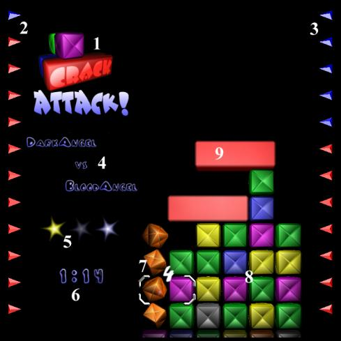 |
Arrow KeysSpace BarEnterP | pEsc
Game PlayThe BasicsSlowly, your stack of blocks grows from the bottom, and you've got to make sure it never reaches the top. Because, once it does, you lose! To eliminate blocks from the stack, line up at least three of one color, horizontally or vertically. Once you do, those blocks disappear, and put off slightly your inevitable demise.To add to the excitement, chunks of red garbage will fall from above. It is impossible to eliminate this garbage directly. However, if you eliminate any blocks which are touching the garbage, the garbage will shatter into normal, run-of-the-mill blocks. Throughout the game your stack of blocks will slowly grow from below, initially quite slowly but always faster and faster. When the stack reaches the top it will pause and you have seven seconds to save yourself. It is possible, however, to get a momentary repose from your stack's assent. When you eliminate a block or cause garbage to shatter, the growth of your stack will pause. Even if your stack has reached the top and you're about to lose, you will be given a little more time to save yourself. Time during which a block is disappearing or a chunk of garbage is shattering does not count towards your seven seconds. Multiple EliminationsSo, what is it that causes this garbage? Well, the garbage is your opponent's way of sticking it to you; and, conversely, your way of sticking it to him. While any old slod can eliminate a ho-hum three blocks, a true master will eliminate four, five, or even more blocks at one time. And when he does, not only will he be rewarded with a little light show, but garbage will come raining down onto his opponent's stack! Just remember, the bigger the elimination, the bigger the downpour.CombosBeyond the multiple elimination method, there is yet another technique to generate troublesome garbage. I speak of the dreaded combo. Whenever you eliminate blocks, it's likely to cause other blocks to fall, either simply because they were above the eliminated blocks, or because you have freed them from a piece of overhanging garbage. If, when these blocks fall, they cause a second elimination, you've got yourself a combo. If you're good enough to keep the combo rolling, your combo multiplier will increment for each elimination. And, when the combo is finally complete, a massive chunk of garbage will descend upon your opponent, it's size proportional to your final multiplier.Solo ModeSolo play works a little differently. Instead of trying to last longer than an opponent, now you're attempting to rack up as many points as possible before you die. The number of points you get for an elimination depends on how fancy it is.
When you get a combo, all of the points you earned in the eliminations which made up that combo are multiplied by the combo's highest multiplier. So, for example, if you work up to a x5 combo, then all of the eliminations in that combo will be worth five times the points. But watch out! Eliminations generate garbage in solo mode too. Except the garbage falls on you! So, its a tradeoff between points and garbage. Once the game is over, if your score is within the top thirty scores ever, you win and your name is added to the Hall of Fame! If you manage to get the number one spot, you're in for an extra special treat. Use the arrow keys when viewing the Hall of Fame in order to check out the other scores. Gray BlockWhile there is little more to say about the five standard colored blocks, there is an additional color of block, more rare than the others, the gray block. Even the elimination of just three gray blocks generates garbage, and this is no ordinary garbage. Normally when a piece of garbage shatters, the effect propagates on, destroying all garbage that it is in contact with. Often just one well placed elimination by your opponent can shatter all of your hard earned garbage. Well, gray garbage stops shattering propagation like a firewall and can only be destroyed by an elimination in direct contact with it.In solo mode a gray elimination generates three times the points! Because gray blocks are worth so many points, it's a good idea to try and work them into a combo multiplier.
X-treme Play ModeFor those who have mastered the art of Crack Attack! and hunger for something more, we offer Crack Attack! X-treme!!! In Crack Attack! X-treme long lost block types, thought by some to be extinct, have resurfaced. Gone is the ho-hum, work-a-day world of the lone gray special block type. Replacing it is a cavalcade of color: over eight special block types!
Use the In Crack Attack! X-treme no block can be trusted and nothing is as it seems! Wild BlockThis crazy block can't decide which color it wants to be! Slowly it shifts though the spectrum, hoping to cause an unexpected match.Special Orange BlockThis baby lays out a hunk of garbage taller than it is wide, guaranteed to add height to your opponent's stack, and quick!Special Yellow BlockKnock your opponent flat with this block's diseased garbage! All his controls will be reversed until he can figure out a way to shatter the garbage and cure himself.Special Green BlockSpecial green blocks generate poisoned garbage which blinds your opponent! Well, sort of. Actually, it will cause his cursor to flicker and then disappear. The cursor will remain nearly invisible until the poisoned garbage is shattered.Special Blue BlockWhen you cause the blue garbage generated by this special block to shatter, instead of turning into blocks, it becomes normal garbage. What a pain!Special Purple BlockForget those big, easy-to-shatter chunks of connected garbage. Any elimination with this block causes a veritable downpour of miniature purple garbage onto your opponent's stack. That stuff has a nasty habit of getting into all the wrong places.Gray BlockThis old guy's still along for the ride. You'll need him to help eliminate his relatives.Ancient Ancestors of the Gray BlockThere are rumored to be even more rare and powerful block colors, lost relatives of the gray block. Legend speaks of a black block and a white block, one which generates obsidian garbage that is nigh impossible to shatter and the other which generates pearl garbage and has dominion over the sun itself!Point ValuesIn solo mode many of the X-treme blocks are worth bonus points. But are the points worth their deadly garbage!? You must decide. It's always a good idea to try and work any special block eliminations into a combo. That way the special blocks' bonus points will be multiplied by the combo's multiplier.
Advanced FeaturesPersonal Garbage ImageCrack Attack! is fully customizable!That is a big lie. However, you can get it to use your own personal giant garbage image. Often, whenever you lay a really serious piece of garbage down on your opponent, it will have some sort of inspirational message on it. Normally, Crack Attack! chooses an image at random from its little stock pile. However, if you specify your own personal image, Crack Attack! will use it more often than not. During online play your image will be placed on any giant pieces of garbage which fall on your opponent. With solo play the image will be used on garbage you send to yourself. Just think of the possibilities! You can communicate your views on your opponent's intelligence, at the same time as you play a rousing game of Crack Attack! You could propose to your girlfriend, assuming she's enough of a loser to play Crack Attack! The list goes on.
A personal garbage image must be 128x128 or smaller. Save the image as an
uncompressed TGA with alpha channel. Name the image file
As you play against a multitude of opponents, Crack Attack! will accumulate a
set of garbage images and will use them from time to time. If you manage to
obtain a garbage image which is of particularly bad taste and you'd like to be
rid of it, find its file. Under Linux it will be found in the directory
Final NotesPotential ImprovementsBelieve it or not, there are improvements which could be made to Crack Attack!
Thanks to...Colin Walters | Wade Lutgen, friend and co-conspirator | Roland Peetz, play tester | Greg Kilcup, my infinitely patient graduate studies professor | Andy Colebourne, creator of AC3D - used to model the basic block | Mark Kilgard, creator of GLUT | the GIMP team | Nullsoft, creators of NSIS - an excellent and free utility for creating Windows install scripts | Mark Wilde | MomGNU General Public LicenseCopyright (C) 2002 Daniel Richard Nelson
174 W. 18th Ave. This program is free software; you can redistribute it and/or modify it under the terms of the GNU General Public License as published by the Free Software Foundation; either version 2 of the License, or (at your option) any later version. This program is distributed in the hope that it will be useful, but WITHOUT ANY WARRANTY; without even the implied warranty of MERCHANTABILITY or FITNESS FOR A PARTICULAR PURPOSE. See the GNU General Public License for more details. The GNU General Public License can be found online at http://www.gnu.org/copyleft/gpl.html. Additionally, a copy can be obtained by writing to the Free Software Foundation, Inc., 59 Temple Place - Suite 330, Boston, MA 02111-1307, USA. DisclaimerIt is important to realize that the name of Crack Attack! X-treme play mode is meant to be humorous, and thus should not itself be the subject of derision. Thank you.ContactDirect comments, questions, praise, flames, and job offers to nelson@aluminumangel.org. Visit my homepage at aluminumangel.org.
|
{kind=link}
{kind=link}
{kind=link}
{kind=link}
{kind=link}
{kind=link}
{kind=link}
{kind=link}
{kind=link}
{kind=link}
{kind=link}
{kind=link}
{kind=link}